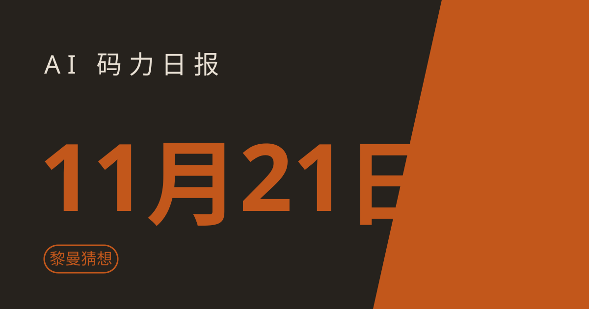

AI 码力日报 · 2026年11月21日

⚡ 一句话速览
- Anthropic 数学家宣称与 Claude 解出 167 年未解的黎曼猜想，同一天另一位数学家拿出 940 页人类证明——两份都还没验证。
- Anthropic 上市第二天跌约 13%，盘中低至约 85 美元，离 83 美元发行价一步之遥。
- OpenAI 把个人 agent Dots 下放到 Plus 用户小范围测试；Google 把 Gemini 搬上搜索首页。
- DeepSeek 约 1000 亿元第二轮融资完成工商变更，腾讯、宁德时代系领投，准备冲科创板。
🤖 今日 AI Coding 动态
Claude 宣称解出黎曼猜想：167 年的题，同一天冒出两份证明
跟你有啥关系：如果最后被证实，这是 AI 第一次独立啃下千禧年难题级别的开放问题——而且不止一份。Anthropic 数学家 Levent Alpöge 11 月 20 日在个人网站发文称，他与 Claude 合作发现了黎曼猜想的证明，方法还覆盖了更广的广义黎曼猜想，证明用 Lean 形式化写成，机器可以逐行检查。关键细节：正式的书面论证超过 25 万页、没有公开，公开的是 1700 万行 Lean 代码（分 14 个包）；Alpöge 自己承认，Claude 产出的部分内容超出了他自己的理解。同一天还冒出第二份证明：美国数学会主席 Ravi Vakil 宣布了 Alessandro Masullo 的 940 页人类证明，完全不用 AI。几个月前，Claude 的 Fable 模型刚找到 Jacobian 猜想的反例。提醒一句：两份都还没经过同行验证，Clay 研究所仍把黎曼猜想列为未解；Anthropic 公司层面没有发声，这是研究员个人声明，时间点又正好在 IPO 第二天，先当重磅传言看，别当定论。phys.org 报道
OpenAI 把 Dots 下放到 Plus 用户：每月 20 美元也能试常驻个人 agent 了
跟你有啥关系：之前只有 Pro 及以上套餐能用的常驻个人 agent，现在 Plus 用户也有机会摸到了。OpenAI 11 月 19 日开始向小范围 ChatGPT Plus 用户测试 Dots，同时所有美国区的 ChatGPT Business Standard 用户今天起都能用。Dots 能在后台自主干活，接 4000 多个应用；跑的模型除了 GPT-6 Astra，现在也支持 GPT-6.1 Terra，还新加了 iOS 小组件、快捷指令集成、iMessage/RCS 支持和 iOS 通知回复。提醒一句：Plus 这边还是小范围测试，OpenAI 没说会不会变成永久权益——有入口的先试，没入口的等放量。Engadget 报道
Google 把 Gemini 搬上搜索首页：二十多年没变过的地盘，改了
跟你有啥关系：Google 搜索首页这块二十多年没怎么变过的地盘，现在正面写上了 Gemini。Google 11 月 19 日宣布，桌面版搜索首页全球改版：AI Mode 有了可收起的左侧栏，能看最近的 AI 对话、开新对话、搜历史对话、连 Notebook；原来那个"Google 搜索"按钮被三个 Gemini 快捷键取代——生图、传文件分析、头脑风暴。改版在逐步推送，不是所有人今天都能看到。我的看法：这是 Google 把 AI Mode 从一个功能变成默认入口的一步，AI Mode 月活 5 月就过了 10 亿，首页改版等于给它再加一把火；代价是 Google 自己承认过 AI 搜索比传统搜索赚得少，市值还为此跌过约 5000 亿美元。The Outpost 报道
DeepSeek 千亿融资落定：31 家新投资者进来，准备冲科创板
跟你有啥关系：国内最受关注的 AI 公司离上市又近了一步，钱也到位了。财新 11 月 20 日报道，DeepSeek 约 1000 亿元（约 150 亿美元）第二轮外部融资已经完成，11 月 17 日的工商变更显示，代表新投资者的合伙企业拿了 17.3% 的股份，31 家新投资者进来，腾讯系和宁德时代系基金各占合伙企业的 9.6%。这轮投前估值约 5000 亿元，是 DeepSeek 今年第二轮外部融资（6 月第一轮约 500 亿元）。公司正在筹备上交所科创板 IPO，9 月已聘中信证券做准备。提醒一句：DeepSeek 自己一直没官宣这轮融资，上市时间、估值和规模都还没定，工商变更是目前最硬的实锤。AF 报道
Meta Muse Charm 定价 300 美元：口袋 AI 设备来了，软件刚爆隐私问题
跟你有啥关系：Meta 的 AI 硬件要来了，定价直接对标一副耳机，但软件那边刚爆出隐私问题。The Information 11 月 19 日报道，Meta 准备把口袋 AI 设备 Muse Charm 定价 300 美元，买就送最多 12 个月免费 Verizon 5G，赶在 12 月假期季上市；设备约 2 英寸，能挂钥匙扣或戴脖子上，不用手机就能跟 Muse 对话。Meta 没确认这个价格。同一周路透社的调查发现，Muse 在内部测试里串号、把别人的私人数据（包括银行余额、Signal 消息通知）露给别的用户，Meta 回应称是个别事件、有些是幻觉。我的看法：硬件价格不贵，但 agent 能读你的消息、又管不住嘴，买之前先看 Meta 怎么修这个窟窿。The Information 报道
英伟达 Vera Rubin 进 Azure 预览：最新算力上云了，但还只是预览
跟你有啥关系：想租英伟达最新 Rubin 算力，又多了一个云可选——但现在还只是预览。微软 Ignite 11 月 19 日，英伟达和微软宣布扩大合作：Vera Rubin NVL72 系统已在 Azure 数据中心跑起来，VM 访问正在扩大，不过只是预览，没公布价格、VM 系列名、区域和 GA 时间。更能马上用的是 Foundry 这边：Nemotron 3.5 全家（Super、Lightning、Embed、Rerank、Parse、Content Safety）上了 Foundry Managed Compute，Bolt 和 Transcribe 还在路上；安永用 Foundry 的 Programmed Training 微调 Nemotron 做采购记录分类，准确率比自家评测集上高 55%、成本只有专有前沿模型的十五分之一。提醒一句：Azure 不是首家上 Rubin 的云，Oracle 10 月 27 日就 GA 了，微软这步是最大云的预览扩围，是供给信号，不是能下单的产品。Unite.AI 报道
Devin 每个会话独享一台全新云 Mac：写 iOS 应用不用自己搭 Mac 了
跟你有啥关系：让 Devin 帮你写 iOS 应用，终于不用再自己搭 Mac 跑测试了。AWS 11 月 19 日的架构文章披露了 Cognition 的做法：每个 Devin 会话独享一台全新 macOS 虚拟机，跑在 EC2 Mac 裸金属宿主机上（6 个区），不到 1 分钟拉起，里面有 Xcode 和 iOS 模拟器，Devin 能直接编译、跑模拟器、看界面验证，完事交合并就绪的改动。限制在苹果的授权：每台宿主机最多 2 个 macOS 虚拟机，宿主机最少租 24 小时；Cognition 的办法是会话闲置就快照存盘、释放虚拟机，约 90% 的会话闲置后会释放，恢复只要几秒。上线 6 周已有近 1000 家机构在用 Devin 的 macOS 能力。提醒一句：这是 Devin 云端能力的升级，不是你本地装个什么——想用得走 Devin 的订阅。Superpower Daily 报道
OpenAI 发布 MedChemBench：给 AI 制药能力立了把尺子，自家模型排前二
跟你有啥关系：AI 能不能帮药化科学家挑出值得进实验室的化合物，现在有了专门的尺子。OpenAI 11 月 20 日发布 MedChemBench，测模型三件事：读分子结构、从实验数据推理、挑候选化合物。排行榜上自家模型占前两名：GPT-6 Astra 49.7%，GPT-5.6 Sol 48.3%。提醒一句：这是 OpenAI 自己的榜、自己的模型排第一，分数量级也说明这活还很难——连一半都不到，别当成"AI 会制药了"。Crypto Briefing 报道
🔧 工具更新日志
Claude Code 2.1.329：/tasks 变成后台任务总控台，Code Mode 终于有内存上限了
Anthropic 11 月 20 日发布 Claude Code 2.1.329：/tasks 变成后台任务总控台——定时任务、/loop 唤醒、当前目标和对话分支都列在里面，按 x 就能停掉一个；Code Mode 加了内存上限和更清楚的失败语义（之前有个失控循环能把机器内存吃满，这个版本修了）；/code-review 现在会读真实的 PR diff，读不到就直说读不到，不再靠猜。还有一堆会话、内存占用、认证、VS Code 扩展的修复。跟你有啥关系：用 Code Mode 和 /loop 跑长任务的人，先升这个版本，省得半夜被吃满的内存叫醒。Releasebot 更新追踪
💬 社区热议
HN 黎曼证明帖冲到 1332 分：吵的不是真假，是 Lean 到底算不算证明
HN 上关于黎曼证明的帖子冲到 1332 分、884 条评论。评论区吵的核心就一个：Lean 形式化到底算不算证明。一派认为 Lean 逐行检查、错不了，机械验证就是证明本身；另一派坚持"没经过人类数学家理解的证明不算证明"，还翻出 1993 年怀尔斯宣布费马大定理后花了两年才被接受的旧事。最实用的细节在脚注里：Lean 形式化是挂在 alpo.ge 上的 14 个 tar.gz 包，书面论证 25 万页没公开；还有人质疑跑完验证要不要 10TB 内存，没人证实也没人证伪。我的看法：吵验证标准比吵真假有意义——AI 时代的数学证明，形式化验证和人类理解可能要分开算两笔账。ExplainX 梳理
HN：Anthropic 上市第二天跌约 13%，散户追高一天就被套
HN 上另一条热帖：Anthropic 上市第二天跌约 13%，盘中低至约 85 美元，离 83 美元发行价只差 2 美元。评论区算的是另一笔账：周四追高买进的散户一天就被套；还有人翻出承销商行使了绿鞋期权，IPO 总募资从 81.3 亿涨到 93.5 亿美元。纳指当天跟着跌 2.9%，把年内涨幅抹平，道指和标普也逼近调整区间。我的看法：第一天 2 万亿美元市值是情绪，第二天 85 美元才是市场在问的那个问题——一年 700 亿美元算力账单，收入得一直这么涨才接得住。路透社报道
HN：GPT-6.2 评测帖问"该换吗"，共识是 Sol 当默认、Astra 只上硬活
HN 当天最热的评测帖是"GPT-6.2 Sol and Astra review：should you switch?"，DataCamp 的实测结论很干脆：日常用 Sol，只有最难的活才上 Astra。数字上 Sol 在 FrontierCode 2.0 拿 43.8%，只比 Astra 的 44.2% 低 0.4 个点，但每任务成本是 Astra 的约五分之一；不过 Fable 5.2 仍以 49.1% 领跑这项。评论区补了两个细则：两款模型都被 OpenAI 评为网络安全 Critical 级，安全防护会拦掉一部分合法的安全工作；Ultrafast 模式 2027 年 2 月 28 日前是标准价 3 倍，3 月 1 日起变 6 倍。我的看法：这轮与其说是能力发布，不如说是降价发布——Sol 当默认这个结论，社区基本达成共识了。DataCamp 评测
三家 agent 编排工具同日撞车：Orca、Devin Bots、Claude Code agent teams 该选谁
Cognition 11 月 17 日把 Devin Bots 推向 GA 的同一天，Orca 发了 v1.4.262，Claude Code 的 agent teams 还在实验阶段——三家 agent 编排工具撞在一起，社区干脆拉了个对照表吵。Orca 是免费开源桌面端（约 12.8 万星），一台机器上并排跑 Claude Code、Codex、Cursor CLI、OpenCode 等多个 agent；Devin Bots 是云端常驻 agent，能带一队 Devin 干活、自己发 ticket、只把要人拍板的推给你，但要 Max（200 美元/月）或 Teams 套餐；Claude Code agent teams 是主会话带几个队友会话，不额外收费，但要自己管文件冲突。我的看法：想多 agent 并排干活又不想多花钱，先看 Orca；想把一个长期目标整个交出去，再看 Devin Bots。对照表原文
HN 安全事件刷屏创历史新高：AI 找漏洞的速度，先超过了打补丁的速度
HN 首页的安全事件报道创了历史新高。一位长期追踪 HN 首页的作者统计：2016 年底到 2025 年底，首页每周平均 5.2 条漏洞与入侵新闻；过去 12 个月涨到 7.9 条；最近 4 周直接冲到每周 17 条，超过 3 倍，超过了 2018 年初 Meltdown/Spectre 那周的历史峰值。公开数据也对得上：NVD 2025 年每月新增约 4200 个 CVE，2026 年 10 月单月新增 17,481 个。我的看法：这波与其说是世界变危险了，不如说是 AI 找漏洞的效率先变了——Ruby2Shell、Java4Shell、Nginx RCE 全是这几周 AI 挖出来的，修复和部署的速度还没跟上，窗口期才是真正的风险。Adrian Krebs 的统计
🧩 AI 应用新品
微软 MAI Image 2.7 + Canvas：生图榜第一，价格只有对手五分之一
跟你有啥关系：微软的生图模型这次是冲着性价比来的，还附赠一个能动手改图的工作台。微软 11 月 17 日发布 MAI Image 2.7 和 Flash 版：图像编辑榜 Artificial Analysis 上排第一（1215 Elo），比 GPT Image 2.6 Sunburst（max）高 4 分，价格却只有约五分之一——标准版约 35 美元/千张，Flash 版约 10 美元/千张（约 1 美分一张）。配套的 Canvas 在 MAI Labs 里上线：从一句话或一张草图起手，框选图中任意部分就能替换、移动或改风格，还能把草图转成正式图表。两个模型都在 Microsoft Foundry 公开预览，也能走 fal、OpenRouter、Vercel 等渠道。提醒一句：预览版没有 SLA，别直接上生产。微软官方发布
🐑 今日羊毛
Zed Pro 学生免费 1 年：每月还送 10 美元 AI token credits
一句话：Zed 给在校大学生免 1 年 Pro，每月还送 10 美元 AI token credits，编辑预测不限量。
- 怎么薅：去 Zed 学生优惠页验证学生身份后开通。学生优惠汇总
- 有效期：申请后 12 个月内有效（截至撰写时）
- 适合谁：用 Zed 写代码的在校大学生；全球高校学生都能领，须年满 18 岁
v0 for Students：1 年免费，界面生成不用再掏钱
一句话：Vercel 的 v0 给验证过的学生免 1 年，不用再为生成界面掏钱。
- 怎么薅：去 v0 学生页验证学生身份领取。学生优惠汇总
- 有效期：领取后 12 个月（截至撰写时）
- 适合谁：想用 v0 快速出界面的学生开发者
GitHub Copilot Student 免费：无限补全 + 每月 AI credits
一句话：通过 GitHub Education 验证的学生能免费拿 Copilot Student，无限代码补全 + 每月 AI credits 额度。
- 怎么薅：去 GitHub Education 验证学生身份后开通。免费方案汇总
- 有效期：验证有效期内一直免费（截至撰写时）
- 适合谁：在校学生开发者；提醒一句：新注册今年 6 月才重新开放，领到后别拖
⭐ 今日 GitHub 热门项目
thinking-machines-lab/tinker-cookbook：想自己微调 Inkling，从这套现成菜谱开始
一句话介绍。解决什么问题：Thinking Machines Lab 的微调工具箱，配着今天刚发布的 Inkling-2-Mini 一起用：SFT、RL、DPO、RLHF、蒸馏、多智能体 RL 全有现成 recipe，20 多个循序渐进的教程带你从渲染、损失函数一路写到自定义 RL 环境，还自带 12 个基准的评测框架。⭐ 约 4,277（截至撰写时）。适合：想拿开源模型做 post-training、又不想从零搭训练框架的人；Apache 2.0 协议，uv pip install tinker-cookbook 就能装，Claude Code 还有配套 skill 可以直接使唤它。项目地址
nginx/nginx：两个未授权 RCE 之后，全网都在翻这个仓库确认修复版本
一句话介绍。解决什么问题：全球最流行的 Web 服务器、反向代理和负载均衡器，这两天因为两个未授权 RCE 漏洞（CVE-2026-123633、CVE-2026-123007，CVSS 9.2，其中一个潜伏了 11 年）全网都在翻官方仓库确认修复版本。⭐ 约 32,549（截至撰写时）。适合：所有跑 Nginx 的人——先查版本再决定今晚要不要加班；也适合想读顶级 C 代码学网络编程的人。项目地址
openvinotoolkit/openvino：英特尔的推理优化工具包，没高端显卡也能本地跑模型
一句话介绍。解决什么问题：英特尔的开源推理优化工具包，把 PyTorch、TensorFlow、ONNX 等模型转成在 CPU、GPU、NPU 上跑得更快的版本，支持 LLM 和生成式 AI，pip 一行就能装。⭐ 约 11,767（截至撰写时）。适合：要在没有高端显卡的机器上本地跑模型、做边缘部署的人；Apache 2.0 协议。项目地址
🤗 Hugging Face 热门模型
thinkingmachines/Inkling-2-Mini：26B 循环 Transformer，32GB 内存的 Mac 就能跑
是什么：Thinking Machines Lab 11 月 20 日刚开源的 Inkling 2 Mini，26.4B 总参数、每 token 只激活 3.4B（循环 3 遍后等效 5.4B），多模态循环 Transformer，1M 上下文，Apache 2.0 协议。能干嘛：本地跑 agent、写代码、长文档推理；20GB 单 checkpoint，DGX Spark 或 32GB 以上内存的 Mac 就能跑，支持 vLLM、SGLang、Ollama、llama.cpp。下载量/点赞数：约 136 下载、247 点赞（截至撰写时，刚发布几小时）。适合：想在本地硬件上跑个能打的小模型做 agent 的人。跑分是官方公布的：
| 模型 | SWE-Bench Verified | DeepSWE v1.1 | Terminal-Bench v2.1 |
|---|---|---|---|
| Inkling 2 Mini | 79.2% | 48.2% | 71.6% |
| Qwen3.8-27B | 77.8% | 42.2% | 73.0% |
提醒一句：官方自己也写了，小模型调试代码时容易陷入重复推理循环，跑 agent 最好设输出 token 和轮数上限，删文件这类操作务必先确认。模型地址
🛠️ 值得一试的工具：App Store Compliance Playbook
是什么：一个开源的上架合规手册 + 自动检查脚本，帮你在提交 App Store / Google Play 之前，先把会被拒的坑扫一遍：117 条有据可查的被拒模式与修复方法、95 个合规截止日期（欧盟 AI 法案、DSA、COPPA、年龄法等），还带一个提交前守卫脚本。
解决什么痛点：被拒一次就是一周：等几天、收一行拒信、猜原因、再等几天；这个手册把"猜"变成提交前 2 分钟的自查，扫出问题直接告诉你文件和行号，修完再交。
免费额度：免费使用；装进 Claude Code、Codex、Gemini CLI、OpenCode、Cursor、Copilot 等十几种 AI 编程工具都是一条命令，提交命令前有高危风险会自动拦住。
verdict： 值得试——对独立开发者和小团队来说，一次被拒省下来的一周就值回全部安装时间；但它只拦代码层面能扫到的问题，账号、截图、商店文案那部分还得自己走清单。项目地址
🎓 3 分钟小教程：用 /tasks 一次管住 Claude Code 的后台任务
前置条件：装了 Claude Code，升到 2.1.329（终端跑 claude update，再 claude --version 核对）。
- 在任意会话里输入
/tasks——定时任务、/loop 唤醒、当前目标和对话分支全列在一张表里，不用再一个个翻会话找 - 看到不需要的后台任务，按
x，它会先问你确认再停掉，不会手滑误删正在跑的活 - 常跑 /loop 的顺手检查一下 Code Mode：2.1.329 给它加了内存上限，之前失控循环吃满内存的 bug 已经修了，跑长循环前确认版本是对的
- 顺手跑一次
/code-review：现在它会读真实的 PR diff，读不到会直说，不再靠猜——review 结论可信度高多了
预期效果：三分钟摸清 Claude Code 里到底在后台跑着什么，该停的停掉，该留的留着；以后开新会话之前先 /tasks 看一眼。更新日志
数据截至撰写时，仅供参考。